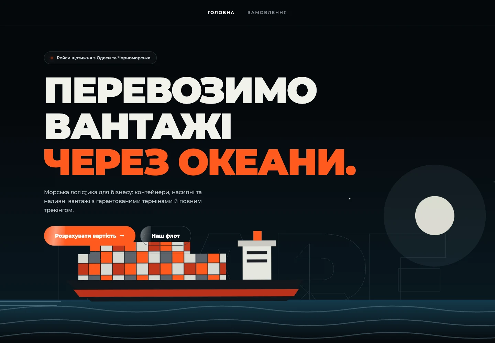
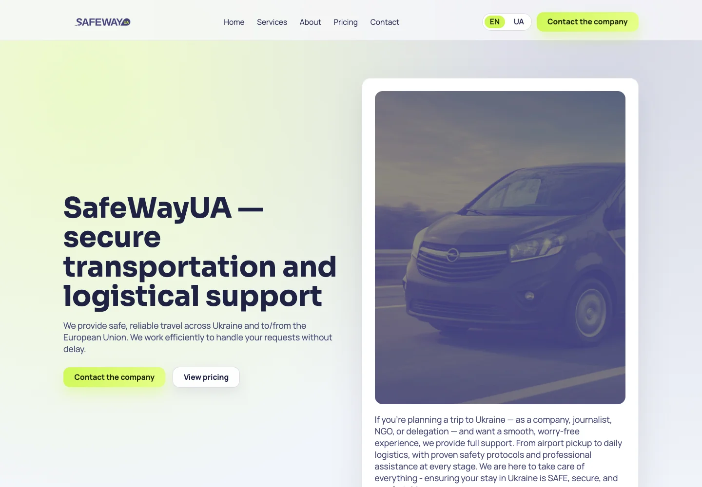
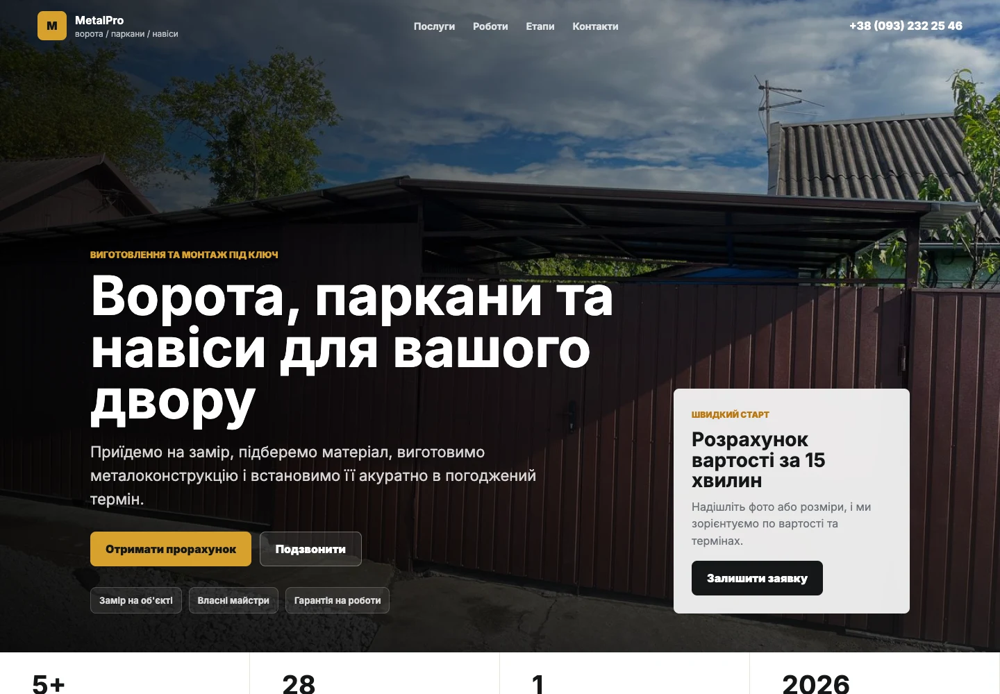

Каталог продукції або послуг
Зрозуміла структура: що ви виробляєте чи перевозите, для кого та в яких обсягах.
B2B / Виробництво та логістика
Для компаній, яким потрібні заявки на розрахунок, довіра партнерів і зрозуміла презентація продукції чи послуг. Без конструкторів, на власному коді.
Що отримує ваш бізнес
Зрозуміла структура: що ви виробляєте чи перевозите, для кого та в яких обсягах.
Форма запиту, яка одразу надходить у Telegram, на пошту, у Google Таблиці або CRM.
Виконані проєкти, фото виробництва чи автопарку, географія роботи та контакти.
Українська та англійська версії для іноземних клієнтів — у пакеті Pro.
Роботи для B2B

Сайт морської логістичної компанії з послугами, флотом і напрямками перевезень.

Презентація послуг для тих, хто шукає надійні транспортні рішення.

Сайт виробника воріт, парканів і навісів із послугами, прикладами робіт та формою заявки.
Вартість
Оплата: 30% до початку розробки, 70% після запуску. Остаточну вартість погоджуємо до старту.
Послуги, виконані проєкти, контакти та форма запиту. 2 раунди правок.
від $500Обговорити форматУсе з бізнес-сайту, дві мовні версії UA/EN і заявки в CRM або Google Таблиці. 2 раунди правок.
від $800Обговорити форматНе впевнені, чи потрібен вам сайт? Безкоштовно розберемо ваш сайт або Instagram за 15 хвилин і підкажемо, що покращити.
Записатися на розбірНаступний крок
Розкажіть про свій бізнес і задачу. Обговоримо формат сайту, обсяг роботи та наступні кроки.
Написати в TelegramTelegram, WhatsApp та Instagram відкривають сторонні сервіси. Повідомлення, які ви надсилаєте там, обробляються за їхніми правилами.